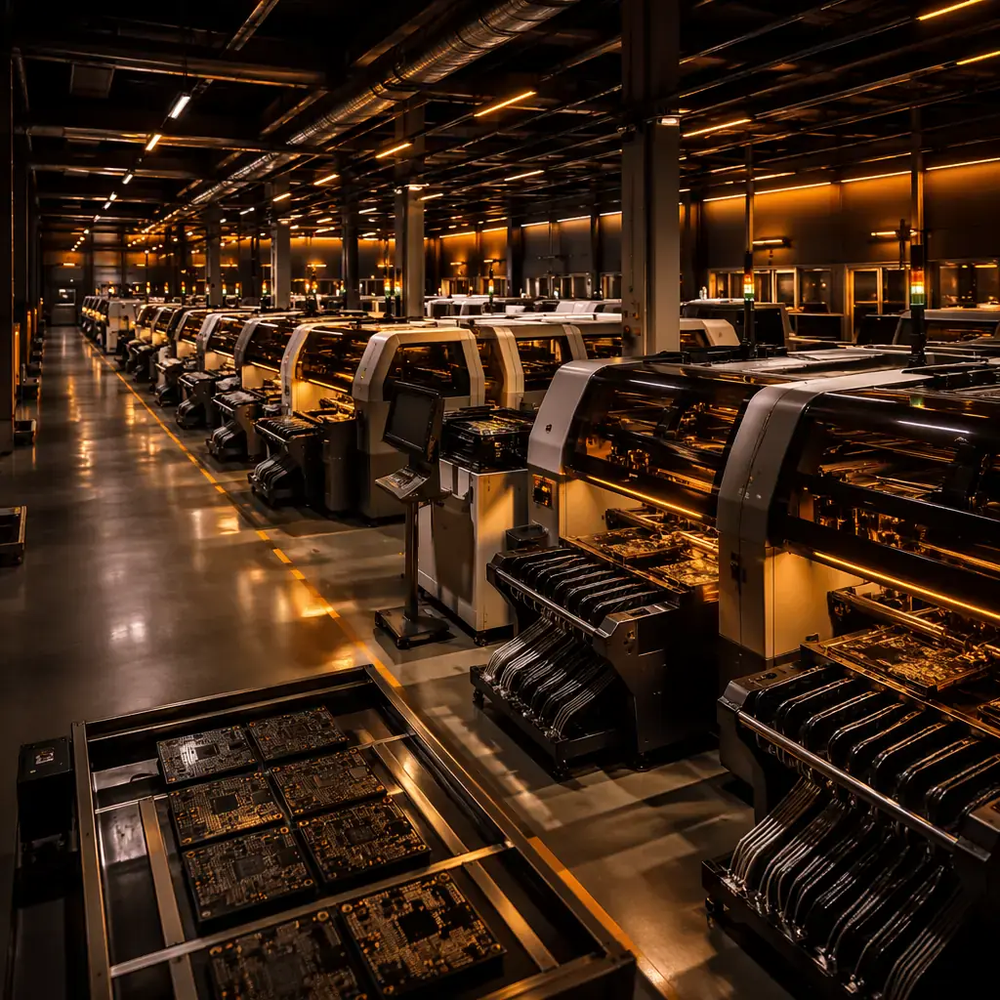
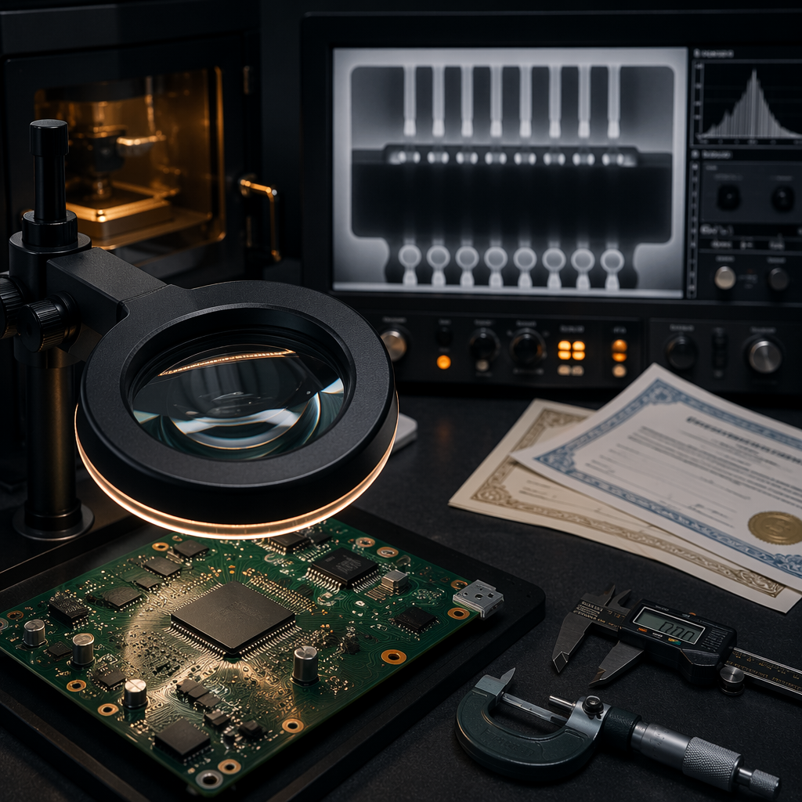
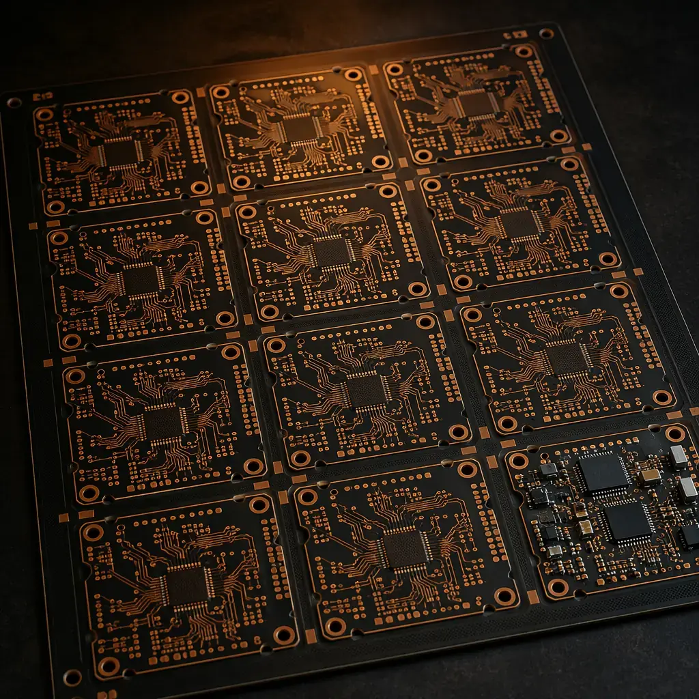
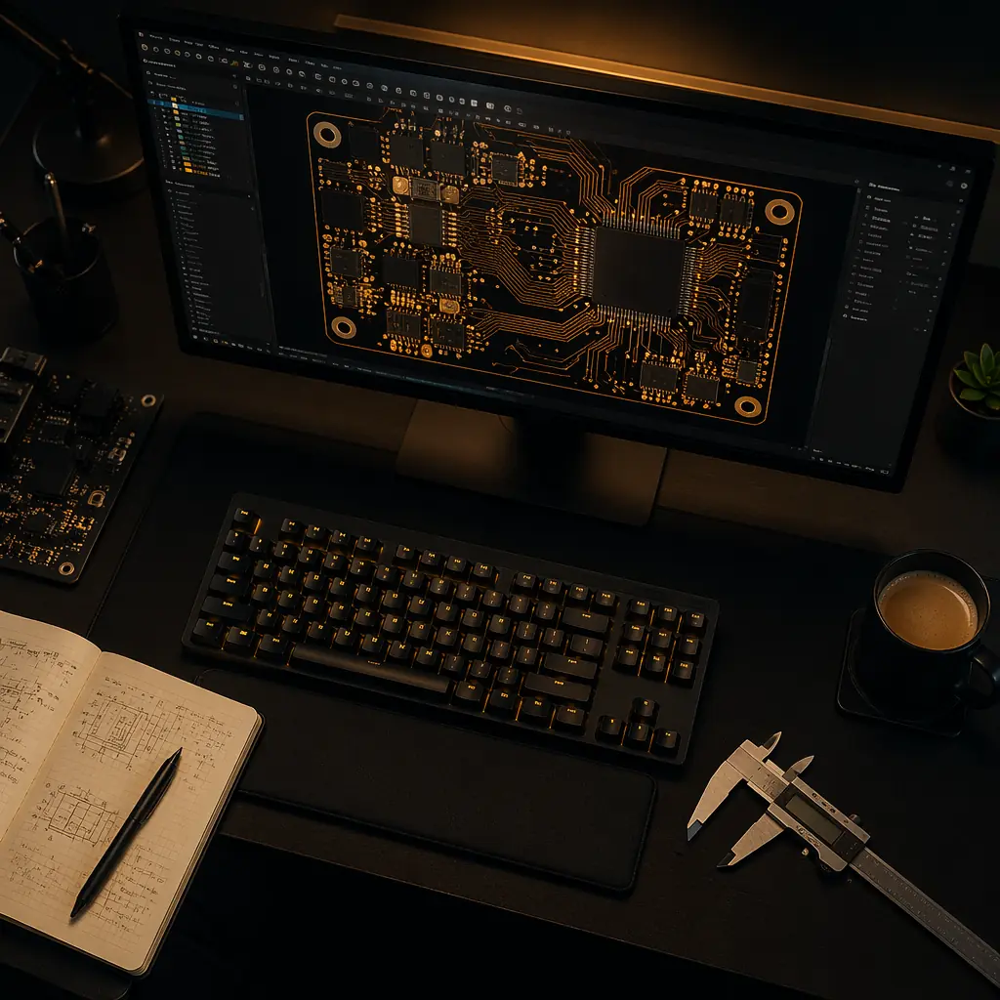

Choosing a PCB manufacturer in China is not about finding the cheapest quote. It's about identifying which factory can actually deliver your boards — on your timeline, to your quality standard, with the documentation your customers require. The cost of getting this wrong is measured in weeks of delay, thousands in re-spins, and worst case, a failed product launch.
We operate a 15,000㎡ PCB and PCBA facility in Shenzhen's Bao'an district. We've been on both sides of the supplier audit — conducting them and receiving them. Here are the 10 questions that separate a capable manufacturer from a trading company with a website, plus the red flags procurement professionals miss.
Reality check: Shenzhen has an estimated 1,200+ companies listing "PCB manufacturing" as a service. Fewer than 200 own their production lines. The rest are brokers, trading companies, and design houses reselling factory capacity. Your job is to identify which category your supplier falls into — before you place a PO.
1. Do You Own Your Production Lines?
This is the single question that eliminates the majority of "manufacturers" you'll encounter on Alibaba and Google. A trading company can show you a factory tour video filmed 3 years ago at a facility they used once. They can provide certificates that belong to their subcontractor. They cannot answer detailed process questions because they don't control the process.

How to verify: Request a live video walkthrough — not a pre-recorded tour. Ask to see today's production schedule with your call scheduled during operating hours. Count the number of SMT lines: a broker will hesitate or give a round number. A factory manager will tell you exactly — "we have 8 SMT lines, 6 Yamaha YSM20R and 3 ASM Siplace" — because they walk past them every day.
If they can't show you the factory floor within 24 hours of asking, they don't own it.
2. What Certifications Do You Hold — and Can I See the Certificate Numbers?
ISO 9001 is the baseline — every serious manufacturer has it. But for regulated industries, you need more. Automotive requires IATF 16949. Medical devices often require ISO 13485. Aerospace looks for AS9100. And if your boards ship to North America, UL recognition for the specific materials and constructions matters.
Common trap: A supplier says "we're ISO 9001 certified" but their certificate is held by a related company — not the legal entity you'd be contracting with. Always ask for the certificate number and verify it on the certification body's public database. IATF 16949 certificates are all searchable on the IATF database. Takes 30 seconds.
A legitimate manufacturer will provide certificate numbers without hesitation. The ones who deflect with "we'll send it later" or "our sales team has it" are almost certainly not in compliance with what they claim.
3. What Are Your Actual Technical Limits — Not Your Catalog Specs?
Every PCB factory's website says "2-32 layers, 3/3mil trace/space." But the real question isn't what they can do — it's what they do reliably. A factory that has the equipment for 3/3mil but only achieves 85% yield on those designs is not a 3/3mil factory in any practical sense.
97%
Ask for first-pass yield data by technology tier. A manufacturer running 5/5mil designs at 97%+ first-pass yield is more valuable to you than one claiming 3/3mil capability at unknown yield. Yield directly determines your per-board cost and delivery reliability — two things that matter more than spec sheet bragging rights.
Also ask about their actual layer count distribution. If 90% of their volume is 2-4 layer boards, your 16-layer controlled-impedance design is going to be a learning experience for them. That's not what you want.
4. What Testing Equipment Is On-Site?

Testing is where many factories cut corners. They'll have AOI because it's standard equipment, but X-ray inspection for BGA and QFN solder joints? Flying probe testers for prototype verification? Impedance TDR for controlled-impedance boards? These are capital investments that separate comprehensive manufacturers from basic PCB fabricators.
A complete testing stack should include: Automated Optical Inspection (AOI) on every line, X-ray inspection for hidden joint verification, flying probe or in-circuit test (ICT) for electrical validation, and functional test capability if you need turnkey PCBA. If they ship boards without at least AOI + electrical test on 100% of boards, walk away.
At Huaxing: Three-stage quality gate — IQC (incoming material inspection), IPQC (in-process quality control at every critical stage), and OQC (final outgoing inspection). AOI on 100% of boards. X-ray for BGA/QFN. Flying probe and test fixture. Impedance TDR. Thermal shock sampling per IPC-TM-650.
5. Can You Show Me a Real Production Timeline — With Your Current Load?
Every factory quotes standard lead times: "5-7 days for prototypes, 2-3 weeks for production." But those numbers assume the line is available right now. In practice, factory loading varies dramatically — Chinese New Year adds 3-4 weeks, peak season (Q3-Q4) adds 1-2 weeks, and material shortages (copper-clad laminate, specialty solder mask) create unpredictable delays.
A trustworthy supplier will tell you their current queue depth. "We're at 85% capacity this week — your 10-day prototype order would start production on day 4." The ones who always say "no problem, standard lead time" without checking are not being honest with you or themselves.
6. What Materials Do You Stock?
PCB material selection isn't just about picking FR-4 or Rogers from a datasheet. It's about whether the factory has the specific laminate in inventory, in the thickness you need, right now. Lead times on specialty laminates can exceed 4 weeks — if the factory doesn't stock them, your 2-week lead time is fantasy.
Ask for their stock list: What brands of FR-4 do they carry (Shengyi, Kingboard, ITEQ, Isola)? What Rogers grades (4350B, 4003C, 3003)? Do they stock high-Tg (170°C+) materials for lead-free assembly? What about aluminum substrates for LED and power applications? If you need 2.0mm thick Rogers 4350B and they stock 1.6mm ITEQ — that's a 3-week procurement delay before your board even enters production.
7. What Is Your Minimum Order Quantity — Realistically?

MOQ is one of the most gamed numbers in PCB procurement. A factory that advertises "MOQ: 1 piece" isn't offering you a service — they're offering to lose money on your first order to acquire you as a customer. The real economic MOQ is the quantity at which panel utilization becomes efficient and setup costs amortize to a reasonable per-unit price.
For a standard 2-layer board, economic MOQ is typically 5-10 pieces for prototypes. For a 10-layer controlled-impedance design with ENIG finish, it might be 20-30 pieces to justify the process setup. A good manufacturer will explain why a particular quantity is the breakpoint — rather than just accepting whatever number you propose.
500
Procurement insight: The per-board cost sweet spot for most PCB designs falls around 500 pieces. Below that, NRE and setup costs dominate. Above 1,000 pieces, additional discounts are marginal — the price asymptotes toward raw material + labor cost. Understanding this curve prevents over-ordering for "volume discounts" that don't actually materialize.
8. How Do You Handle Quality Failures?
This question reveals more about a supplier than any certification can. Every factory produces defective boards sometimes — the difference is in how they handle it. Do they argue about whether the defect is "in spec"? Do they offer a credit on your next order (tying you to a factory that just failed you)? Or do they re-run the order immediately at their cost and conduct a root cause analysis?
Ask for their formal RMA process, their 8D (Eight Disciplines) problem-solving methodology, and their average response time to quality complaints. A manufacturer with a real quality system can describe this in detail in 2 minutes. One without it will say "we don't have quality problems" — which is the biggest red flag of all.
9. What Documentation Do You Provide?
For regulated industries, documentation isn't optional — it's the product. Your end customer may require PPAP (Production Part Approval Process) Level 3 documentation, including Process FMEA, Control Plan, MSA (Measurement System Analysis), and full material certifications. Medical device customers need traceability from component reel to finished board serial number.
If your supplier can't provide PPAP documentation, or doesn't know what FMEA stands for, they're not qualified for automotive, medical, or aerospace work — regardless of what their website says. This isn't a "nice to have." It's a binary qualification gate.
10. Can I Speak to an Engineer — In English?
The final test: request a technical call with a process engineer, not a sales representative. The engineer should be able to discuss your specific design — stackup recommendations, impedance targets, DFM concerns — in English. If every technical question gets routed back to a salesperson who "needs to check with engineering," you're not talking to a manufacturer. You're talking to a middleman.

Quick test: Send a Gerber file and ask, "What annular ring are you seeing on the 0.3mm vias, and would you recommend increasing the pad size?" A real process engineer will open the file and give you a number within 60 seconds. A trading company will say "our technical team will review and respond within 24 hours."
Putting It Together: The RFQ Template
When you reach out to a potential PCB supplier, your initial RFQ should force answers to these questions — not through interrogation, but through the specificity of your request. Here's a template:
Subject: RFQ — [Your Company] | [Board Name] | [Qty] pcs Body: We're evaluating PCB suppliers for [product category]. Please quote: • Board: [layers], [dimensions], [material], [thickness] • Finish: [ENIG/HASL/OSP], [copper weight] • Qty: [prototype qty] + [production qty estimate] • Testing: We require 100% AOI + electrical test. Flying probe or ICT report to accompany shipment. • Certifications: Please attach current ISO 9001 certificate + any industry-specific certs (IATF, UL, etc.) • Documentation: We require CoC, material certs, and first-article inspection report. • Lead time: Please specify actual production start date based on current queue. Also, could we schedule a 15-minute technical review call with a process engineer to discuss stackup before we release files? Attached: preliminary Gerber + stackup drawing.
This RFQ does three things simultaneously: it signals that you're a serious buyer who knows what to ask for, it forces the supplier to demonstrate technical capability just to respond adequately, and it filters out trading companies who can't provide test reports, certifications, or engineer access.
Bottom Line
Choosing a PCB manufacturer isn't a procurement exercise — it's a risk management decision. The factory that quotes $0.15 less per board but has no X-ray inspection, can't produce PPAP documentation, and routes every technical question through a salesperson is not cheaper. They're more expensive — you just haven't incurred the costs yet.
The 10 questions above are designed to surface the information that matters. Certifications, equipment lists, and process documentation are objective evidence. Engineer access, live factory tours, and honest capacity reporting are behavioral evidence. You need both.
One final rule: if a supplier can't answer at least 8 of these 10 questions within 48 hours of your first contact, move on. The PCB industry has no shortage of capable manufacturers. Your time is better spent finding the right one than chasing the wrong one.